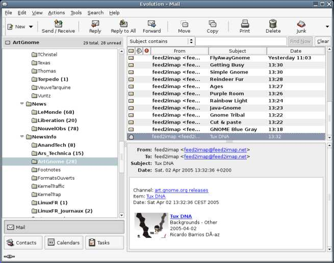
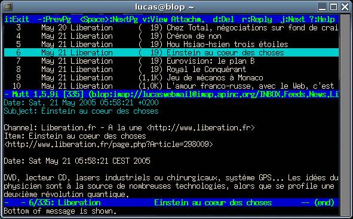

Feed2Imap
Feed2Imap is an RSS/Atom feed aggregator. After Downloading feeds (over HTTP or HTTPS), it uploads them to a specified folder of an IMAP mail server or copies them to a local maildir. The user can then access the feeds using Mutt, Evolution, Mozilla Thunderbird or even a webmail.
Rationale
Feed2Imap is an attempt to solve the problem most roaming users experience when trying to keep up with their feeds. Other solutions to this problem include :
- using classic aggregators like Straw, Liferea or Blam! and copy the database using scp (Yes, I know at least one person doing this.)
- using Bloglines. It's slow, not flexible, and a commercial company.
- using your own Planet. But it's not flexible at all, and not end-user friendly.
- using a new application which hasn't been written yet : a client/server feed aggregator, so you could access your feed server remotely. The important part is "hasn't been written yet".
Feed2Imap isn't the first project transforming feeds into emails. rss2mail (Perl), rss2email (Python) and Newspipe (Python) do this, but they send items as emails, so you spend a lot of time playing with procmail.
Screenshots
Of course, how it looks depends on your MUA !

Reading feeds with evolution

Reading feeds with mutt (yeah, some people do that!)
Download
The lastest release is version 0.9.4.
Downloads are available on http://download.gna.org/feed2imap/.
New releases are advertised using this RSS feed.
There's also a Debian/Ubuntu package. Just apt-get install feed2imap. -->
Installation Instructions
- Download it and untar it.
- Run ./setup.rb as root, or figure out how to install it on your account by reading ./setup.rb --help (it's possible, but you have to take care of RUBYPATH.
- Install the needed dependancies. For Debian, it is : ruby libtest-unit-ruby librexml-ruby librmail-ruby1.8 libyaml-ruby libopenssl-ruby libfeedparser-ruby rake (if you are using Debian Woody, find another solution : ruby is too old on woody). Ruby-feedparser can be downloaded here.
- (Not mandatory, but a good idea :) run rake test and check that everything is working fine.
- Copy feed2imaprc-example to ~/.feed2imaprc, edit it
- Run feed2imap
- If everything goes fine, add it to a crontab. Please don't make it run too often (every hour or so seems good). If you are using a recent version of cron, you can do clever things like this :
*/30 0,7-23 * * * /usr/bin/feed2imap >/dev/null 2>&1
Bug Reporting
Bug reports should go to this bug tracker. Please provide as much information as possible, including :
- A copy of the content of the feed you are trying to fetch. This means that you must save it using wget for example and attach it to the bug report.
- The name and version of your IMAP server.
- The versions of feed2imap and ruby-feedparser.
- The usual stuff: is the problem reproduceable, etc.
Developers
Mailing List
feed2imap-devel at gna dot org is a mailing list for development and general discussion.
- Feed2Imap-devel Info Page (to subscribe/unsubscribe, etc)
- Feed2Imap-devel archives
(Sort of) Developer Documentation
Development takes place on the GNA project page. Source code lives on github. Clone using git clone git://github.com/ln/feed2imap.git.
The source code is quite easy to understand. Tasks are split into classes, themselves split into files :
- The main logic is in feed2imap.rb.
- The config file is parsed in config.rb (but it's using YAML)
- The cache management ("memory" of the items, so items don't get updated twice) is in cache.rb.
- Fetching using HTTP is done in httpfetcher.rb.
- Parsing is done using Ruby-feedparser.
- Everything dealing with IMAP is in imap.rb.
- rexml_patch.rb are small fixes (read: hacks) to REXML.